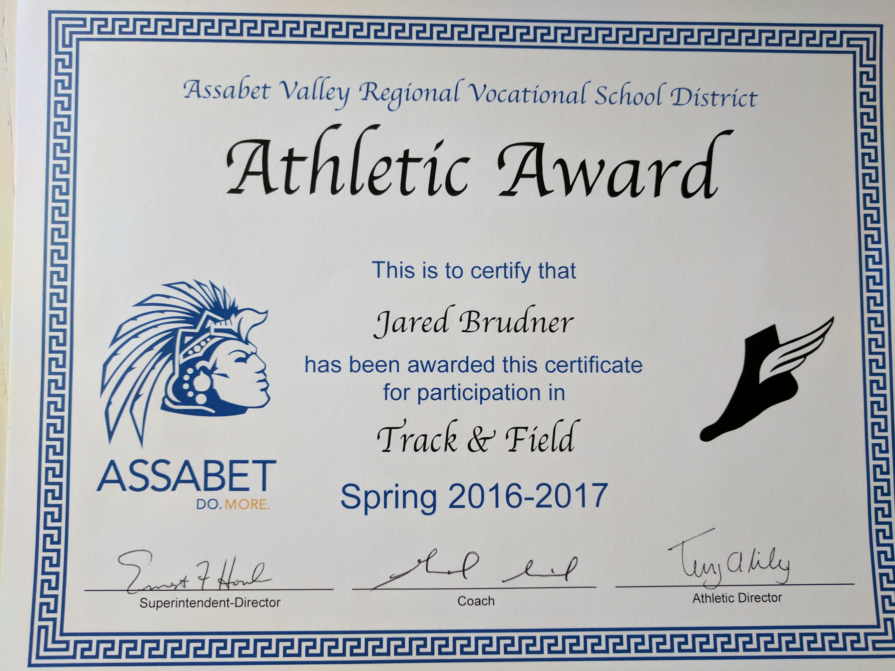
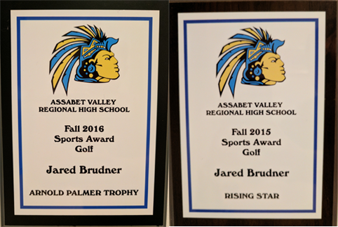

Jared Brudner ePortfolio
Artifacts
![At the start of
sophomore year at Assabet, I was given the opportunity to
participate in a client-based website development project in shop. The instructor from Design & Visual Communications stated that he would like/need a website built for his program to stream live content, display athletic and scholastic footage and imagery, and educate incoming freshmen about shop. I wanted to get involved and see what it would be like to gain experience with a client, and this was a great opportunity. Diving into the process, I learned quite a bit about problem-solving skills, developing a strong relationship amongst my colleagues, and of course gaining more and more useful knowledge of HTML, CSS, JavaScript, PHP, and more. I worked with my colleagues to build this website, which was extremely detailed and technologically advanced. I am very glad I got involved in the project as I obtained experience in programming and client relationships.](artifact1.png)
|
![After the New Year began in 2017, I took on a web project for my grandmother that involved creating a logo, constructing design mockups of the website, and building the code. While taking on this process, I had to have good listening skills, stay focused on her thoughts and ideas and while multi tasking to create a nice website. My objective was to develop a website targeted toward real estate agents and home buyers. It was crucial that I developed her website in time for her approval so that she could obtain the exposure she needed to grow her business.](artifact2.png)
|
 |
![At the age of three I developed a passion for boating and fishing. Every summer and when I would visit relatives in Florida, all I could think of was activities on the lake and the ocean. As long as my Papa or my father agreed to take me on an excursion, I was happy. One summer, I got Lyme disease and had to have an antibiotic that was given to me through a PIC line which started in my arm, traveled up to my shoulder, and ended just above my heart. The doctored prescribed this medical procedure to be sure that I’d feel less pain and swelling in my knee from the Lyme Infection. Luckily, it worked, but I was not able to swim, play sports or sweat for the entire summer of my Fourth Grade year. Thanks to a few adventures in boating, my summer wasn’t as bad as I thought it would be.](artifact4.jpeg)
|
![I have been saving for a car for the past five years. While other kids were playing video games, I was selling video games for a profit, and I still sell technology today. Instead of using all of the money I have made to buy technology, I have saved a percentage of my earnings each year. Last month, with some help from my family, I was able to contribute toward the purchase of my new car, a Ford Fusion Titanium. After researching car buying techniques and tips, I have learned more about automobiles, and I hope to buy and sell a few cars in the process.](artifact5.jpg)
|
 |
Assabet. Do. More. Jared Brudner